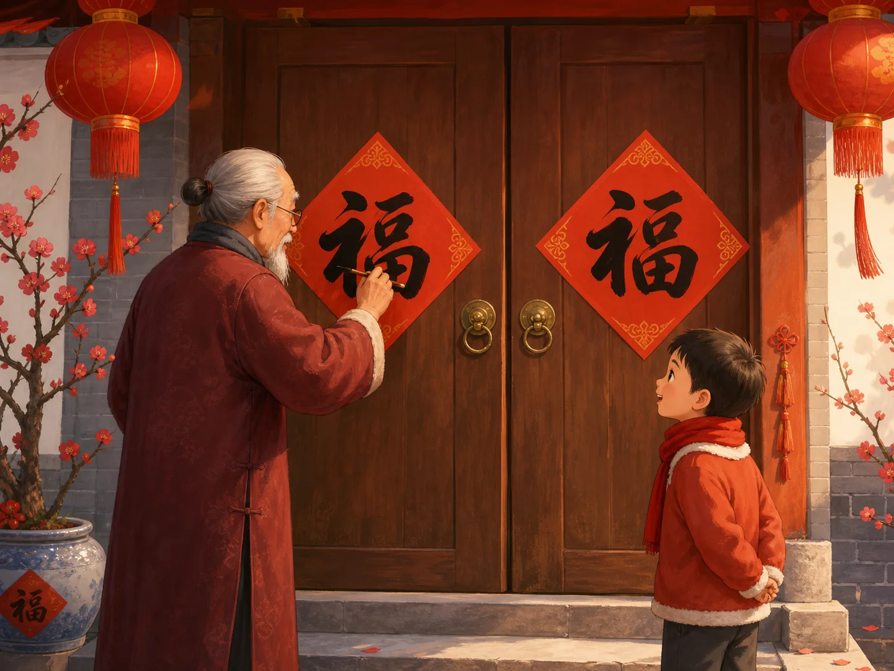
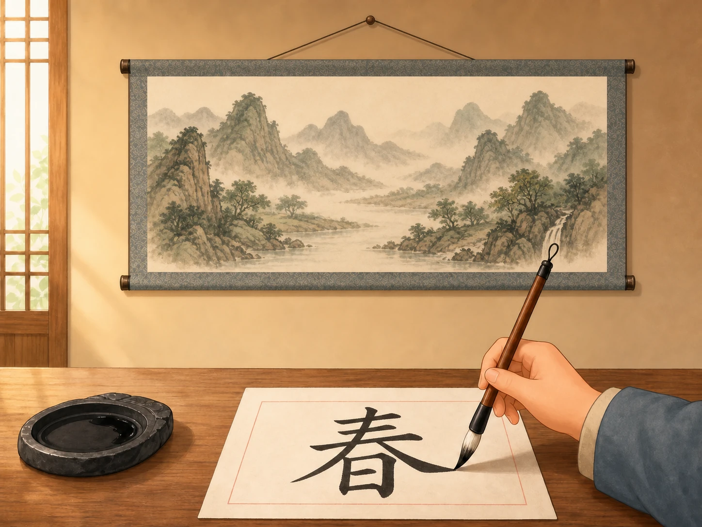
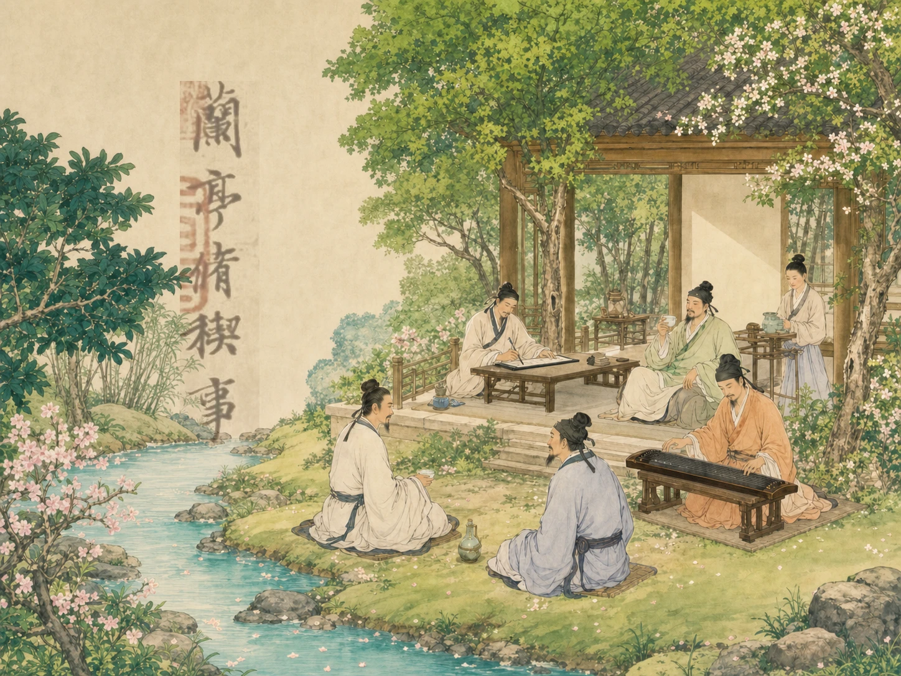

同一个字，为什么能写得完全不同？
How Can the Same Character Look Completely Different?
阅读难度 · 困难Reading level · Hard
Page 1
第一眼：门上的“福”和手里的“福”一样吗？
First Look: Are the Two Fu Characters Really the Same?

This is a modern AI-generated Spring Festival scene, not a photograph of a real writing event. The two fu characters and the act of writing were generated for the picture, so it should not be used as a model for accurate brushwork.
过年时，你可能在门上看见一个大大的“福”。现在把两个人写的“福”放在一起：意思和读音相同，笔画也得让人认得出来，可一个方正厚重，另一个轻快倾斜。究竟是哪一部分相同，哪一部分变了？这个问题正好打开书法的大门。
汉字是记录语言的符号；字形告诉我们这个字由哪些部分组成；篆书、隶书、楷书、行书和草书等书体，是历史中形成的不同书写系统；而书法家的个人风格，还会改变笔画的粗细、速度、间距和整页布局。电脑里的“字体”通常是设计好并反复显示的一套字形。书法则留下某一次书写的动作，哪怕临写同一个范本，两次也不会像打印机那样完全一致。
图中的老人、孩子和门口都是现代想象。老人手里的笔似乎正停在已经贴好的“福”上，门上两个字也像装饰图案，并不能证明真实毛笔怎样运行。它可以帮助我们提出观察题，却不是历史照片或书法范本。看书法的第一步，就是先问：我看到的是原作、复制品、现代临写，还是一张想象图？
At New Year, you may see a large fu, meaning good fortune, on a door. Now place two handwritten fu characters side by side. They have the same meaning and sound, and their parts must remain recognizable. Yet one may look square and heavy while the other tilts and moves lightly. What stayed the same, and what changed? That question opens the door to calligraphy.
A Chinese character is a sign used to write language. Its character form tells us how its parts are built. Seal, clerical, regular, running, and cursive are broad script types that developed historically. A calligrapher's personal style can further change the thickness, speed, spacing, and layout. A computer font is a designed set of forms that appears the same each time. Calligraphy records one act of writing. Even when a person copies the same model twice, the results will not match like two printouts.
The old man, child, and doorway in this picture are modern inventions. The brush seems to hover over a fu that is already attached to the door, and the two characters behave more like decorations than records of real brush movement. The image can give us an observation puzzle, but it is not a historical photograph or a calligraphy model. The first step in looking at calligraphy is to ask: Am I seeing an original work, a reproduction, modern practice, or an imagined scene?
Page 2
篆、隶、楷、行、草，有没有排队退休？
Did Seal, Clerical, Regular, Running, and Cursive Retire in Order?

This is an AI-generated modern practice scene. The character chun (“spring”), the grip, and the brush-tip position are not reliable teaching models. The scroll in the background is not an identifiable historical artwork.
书法史常被画成一列火车：甲骨文之后是篆书，篆书之后是隶书，然后楷、行、草依次进站，好像新车厢一来，旧车厢就报废了。年代线能帮助入门，却会藏起一个重要事实：书体会发展、分支、互相影响，也会长期共存。行书和草书的早期发展并不是等成熟楷书出现以后才开始；楷书已经普及时，人们仍会刻篆书印、临写隶书碑，也会用行书写信、用草书创作。
材料也改变线条。甲骨文常刻在龟甲兽骨上，青铜铭文铸在器物上；它们首先是古代文字证据，不能全都当成纸上毛笔作品。柔软的毛笔可以按下、提起、转锋，墨有浓淡干湿，纸、绢、木简和石碑又留下不同痕迹。同一个“春”若用小篆、隶书和行书写，结构都要让熟悉相应书体的人认出，线条的道路却会很不一样。
所以“书体”也不是“心情按钮”：草书不一定等于激动，楷书不一定等于没有个性。写得快慢、作品大小、临摹对象、文字用途和书写者的选择，会一起制造感觉。真正的观察不是背诵“草书像风”，而是指出哪一笔连起来了，哪里留白变大了，墨色在哪里变干了。
Calligraphy history is often drawn as a train: oracle-bone writing is followed by seal script, then clerical, regular, running, and cursive, each arriving at the next station. A timeline can help a beginner, but it hides an important fact. Scripts developed, branched, influenced one another, and remained in use together. Early running and cursive writing did not wait for mature regular script to be finished. Long after regular script became widespread, people still carved seal-script seals, studied clerical-script steles, wrote letters in running script, and created works in cursive.
Materials changed the lines too. Oracle-bone writing was often cut into turtle shells and animal bones, while bronze inscriptions were cast on vessels. They are evidence of early writing, but they are not all brush calligraphy on paper. A flexible brush can press, lift, and turn. Ink can be dark, pale, wet, or dry. Paper, silk, wooden slips, and stone each preserve a different mark. Write the same chun, meaning “spring,” in small seal, clerical, and running scripts, and readers familiar with each script should still recognize its structure - but the paths of the lines may be very different.
A script type is not a “mood button.” Cursive is not always excited, and regular script is not automatically without personality. Speed, scale, model, purpose, and the writer's choices work together. Careful looking does not stop at “cursive feels like wind.” It points to the connected strokes, the larger empty space, or the place where the ink grows dry.
Page 3
这真是王羲之写《兰亭序》的那一刻吗？
Is This Really the Moment Wang Xizhi Wrote the Orchid Pavilion Preface?

This is an AI-imagined Orchid Pavilion gathering, not an Eastern Jin painting or a record of the event. No figure can be identified as Wang Xizhi, and the writing at left is not an original, copy, or rubbing of the Orchid Pavilion Preface.
公元353年，A famous Chinese calligrapher who lived about 1,700 years ago.与朋友们在兰亭聚会，众人作诗，他为诗集写下序文。后来的人把《兰亭序》视为行书名作，也一代代临写它。但这里有一道关键的证据题：王羲之亲笔写的原卷已经不存。今天博物馆展示的著名“神龙本”，一般传为A powerful and creative time in China about 1,300 years ago.冯承素所摹；另一些版本来自临本、刻石和拓本。
摹本力求沿着原作形状复制，临本是看着范本重新书写，刻本把字转刻到木石等材料上，拓本再用纸墨从刻面取得印痕。每多一道转换，就可能多一道刻工、纸墨和临写者的选择。因此，我们能研究《兰亭序》的流传和历代人怎样理解王羲之，却不能假装眼前就是他在353年留下、从未改变的那张纸。
相传A powerful and creative time in China about 1,300 years ago.皇帝唐太宗太喜爱这件作品，把真迹带进了自己的陵墓。博物馆介绍会谨慎写成“相传”或“据记载”，因为昭陵没有给我们一张写着答案的出土原卷。旧稿里“王羲之酒醒后重写十几遍都不如原稿”的精彩情节，也属于后世爱讲的故事，不能拿来替代现存证据。图中甚至有人在弹古琴，左边还漂着装饰性的假古字 - 它描绘的是现代人的想象，不是那天下午的目击报告。
In 353, A famous Chinese calligrapher who lived about 1,700 years ago. gathered with friends at the Orchid Pavilion. They composed poems, and he wrote a preface for the collection. Later generations treated the Orchid Pavilion Preface as a masterpiece of running script and copied it again and again. But there is a crucial evidence problem: the scroll written by Wang's own hand no longer survives. The famous “Shenlong version” in the Palace Museum is traditionally identified as a tracing copy by Feng Chengsu of the A powerful and creative time in China about 1,300 years ago.. Other versions come through handwritten copies, carved stones, and rubbings.
A tracing copy tries to follow the shapes of an earlier work. A freehand copy is rewritten while looking at a model. A carved version transfers writing to wood, stone, or another surface. A rubbing then uses paper and ink to take an impression from that carved surface. Each transfer can add choices made by another writer, carver, paper, or ink. We can study how the Preface traveled and how later people understood Wang Xizhi. We cannot pretend that the sheet before us is the untouched paper from 353.
According to a famous tradition, the A powerful and creative time in China about 1,300 years ago. emperor Taizong loved the work so much that he took the original into his tomb. Museum descriptions carefully say “tradition holds” or “according to records,” because no excavated original from the tomb has answered the question. The old story that Wang tried more than ten times to rewrite the piece after he became sober is also a memorable later tale, not a substitute for surviving evidence. The picture even adds a musician and floating decorative pseudo-writing. It shows a modern imagination of the afternoon, not an eyewitness report.
Page 4
一支笔里真的藏着“永字八法”吗？
Are the Eight Principles of Yong Hidden Inside Every Brush?
练楷书的人常写“永”。这个字的八种点画被配上“侧、勒、弩、趯、策、掠、啄、磔”等名称，用来讨论落笔、行笔和收笔，称为“永字八法”。它像一间小型动作实验室，让初学者在一个字里练习多种方向。但它不是王羲之亲笔留下的八条课堂笔记，也不是解释所有书体的万能钥匙。
现存材料显示，“永字八法”的体系在唐代书论中逐渐清楚，后人却把它分别归给钟繇、王羲之、智永、张旭等人。与其选一个名人宣布“他发明了八法”，不如承认传授、整理和署名经过了很长时间。八法主要用来讲成熟楷书的点画；看篆书、隶书或狂草，还需要别的眼睛和问题。
“文房四宝”也没有四位可以整齐排队的唯一发明者。毛笔、墨、纸和砚经历了许多地区、工匠与材料的长期改进。传说秦将蒙恬造笔，可毛笔痕迹和实物比他更早；东汉蔡伦因改进并报告造纸方法而著名，考古发现的西汉纸又早于他。墨从早期墨丸到烟墨，砚也有多种石、陶和形制。把技术史讲成四个天才忽然灵光一现，会让真正动手改良的许多无名工匠消失。
Students of regular script often practice the character yong, meaning “forever.” Its eight kinds of stroke are given names that describe ways of beginning, moving, and finishing the brush. Together they are called the Eight Principles of Yong. The character works like a small movement laboratory, letting a beginner practice several directions in one place. But the principles are not eight classroom notes preserved in Wang Xizhi's own hand, and they are not a master key to every script.
Surviving texts show the system becoming clearer in Tang writing theory. Later traditions credited it to Zhong Yao, Wang Xizhi, Zhiyong, Zhang Xu, and others. Instead of choosing one celebrity and declaring, “He invented all eight,” it is more accurate to recognize a long history of teaching, organizing, and attaching names. The principles mainly explain strokes in mature regular script. Seal, clerical, and wild cursive call for additional ways of looking.
The “Four Treasures of the Study” do not have four single inventors lined up neatly either. Brush, ink, paper, and inkstone developed through long work by makers in many regions. A tradition credits the Qin general Meng Tian with inventing the brush, but brush traces and surviving brushes are older. Cai Lun of the Eastern Han became famous for improving and reporting a papermaking method, yet archaeologists have found paper from the Western Han. Ink changed from early pellets to different soot recipes, while inkstones came in many materials and forms. A story about four geniuses having four sudden ideas would erase the many unnamed craftspeople who kept improving the tools.
Page 5
书法史里只有名家和考生吗？
Does Calligraphy History Belong Only to Masters and Exam Candidates?
博物馆展厅喜欢挂名家长卷，因为名家有故事，作品也被收藏家细心保存。可是古代书写远比展厅热闹。僧人和职业抄手抄写佛经，官吏整理公文，商人记账，家人写信，学生在纸背试笔。敦煌文书甚至保存了抄手领纸、欠纸和归还纸张的记录，也留下合同与随手涂写。很多写字的人没有在作品末尾留下名字，却让我们看见真实工作怎样进行。
女性也没有站在书法史门外。她们受到的教育和公开机会常比男性少，所以作品更容易失传或被忽略；但宫廷女性、文人家庭中的女性、宗教书写者和其他女性都曾写字。南宋杨皇后的诗句书法今天藏在博物馆，元代管道昇写给僧人的信也流传下来。称赞王羲之并没有错，错的是讲到最后仿佛只有少数男性名家握过毛笔。
科举和官府确实奖励清楚、规范、便于阅卷和办事的书写。明清官场流行过方正、光洁、大小整齐的台阁体或馆阁体，科举标准也帮助它传播。但它不是全国每张信、账簿、经卷和艺术作品的唯一样子；连文人书法家也会反对千人一面的馆阁风格。考试能推动一种标准，不能让其他写法从社会上消失。
Museum galleries favor scrolls by famous masters. Famous names come with stories, and collectors preserved their works carefully. Historical writing was much busier than a gallery, however. Monks and professional scribes copied Buddhist scriptures. Clerks prepared documents, merchants kept accounts, families sent letters, and students tested their pens on scrap paper. Dunhuang manuscripts even preserve records of paper issued, owed, and returned by scribes, along with contracts and doodles. Many writers left no name at the end, but their pages show how real work was done.
Women were not standing outside the history of calligraphy. They often had less access to education and public careers than men, so their work was more likely to disappear or be ignored. Even so, court women, women in scholarly families, religious writers, and others wrote. Calligraphy by the Southern Song empress Yang survives in a museum, as does a letter that the Yuan artist Guan Daosheng sent to a monk. There is nothing wrong with admiring Wang Xizhi. The mistake is ending the story as if only a few famous men ever held brushes.
The civil service examinations and government offices did reward writing that was clear, regular, and easy to judge or process. In the Ming and Qing, a square, smooth, dark, evenly sized official style was known as the court or chancellery style, and examination standards helped it spread. It was not the only writing in every letter, account, scripture, or artwork across the country. Some scholar-calligraphers even criticized its look-alike quality. An examination can encourage one standard without making every other way of writing disappear.
Page 6
今天写简体字，还算书法吗？
Can Calligraphy Be Written with Simplified Characters Today?
当然可以。简体字和繁体字回答的是“选用哪一种规范字形”，楷、行、草等书体回答的是“采用哪一种书写结构和笔法”，个人风格又回答“这个人怎样处理线条和空间”。这些问题有关联，却不是同一道选择题。今天有人用简体字创作，有人学习古帖时保留帖中的旧字形，也有人把古代笔法、现代排版、巨大尺幅或新的材料放在一起。
不过，“随便画得像古字”也不会自动变成书法。文字是否准确、书体有没有依据、笔画之间怎样呼应、作品为何选择这种布局，仍然值得追问。临摹也不是没有创造力的复印：学习者先尽量看懂范本怎样运行，再在新的纸、墨、身体和时代里写一次。
下次看见一件作品，可以做五步调查：先认文字，再辨书体；看笔画和留白；读作品用途与书写者；最后查看标签写的是原迹、摹本、临本、刻本、拓本还是现代作品。同一个字能写得完全不同，不是因为书法没有规则，而是因为文字、历史规则、材料和人的选择同时落在了一条线上。
Yes. Simplified and traditional forms answer the question “Which standard character form is being used?” Regular, running, and cursive answer “Which script structure and brush methods are being used?” Personal style asks how this writer handles line and space. The questions are connected, but they are not the same multiple-choice problem. Artists today may work with simplified forms, preserve older forms while studying an ancient model, or combine historical brush methods with modern layouts, enormous scale, and new materials.
Of course, drawing something that merely looks old does not automatically make it calligraphy. It is still worth asking whether the text is accurate, whether the script has a foundation, how the strokes respond to one another, and why the page has this layout. Copying is not mindless photocopying either. A student first looks closely at how a model works, then performs it again with new paper, ink, body, and time.
The next time you meet a work, try a five-step investigation. Identify the text, then the script. Study the strokes and empty space. Ask about the purpose and writer. Finally, read the label: is this an original, a tracing copy, a freehand copy, an engraving, a rubbing, or a modern work? The same character can look completely different not because calligraphy has no rules, but because writing, historical conventions, materials, and human choices meet in one line.
一条线里，藏着好几个答案
One Line Can Hold Several Answers
书法不是五种书体排队换班，也不是几位天才独自完成的历史。它既有王羲之和历代名家，也有摹写者、刻工、抄经人、工匠、考生、女性和无名写手；既保存古代字形，也继续使用今天的文字。
同一个字的意思可以不变，书体、材料、速度和布局却能改变它的身体。先分清眼前的证据，再慢慢看一笔怎样开始、转弯和停住，你就不只是在“看漂亮字”，而是在读一场跨越许多人的书写历史。
Calligraphy is not five scripts taking turns, and its history was not made by a few geniuses alone. It includes Wang Xizhi and celebrated masters, but also copyists, carvers, sutra scribes, craftspeople, candidates, women, and unnamed writers. It preserves old character forms and continues to work with the writing of the present.
The meaning of a character can remain while script, material, speed, and layout change its body. First identify the evidence in front of you. Then watch how a line begins, turns, and stops. You are no longer just “looking at pretty writing.” You are reading a history written by many hands.